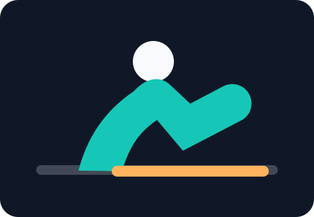

Session active
Minuteur avancé, annonces vocales, vibration et enregistrement automatique.

Choisis un programme
Lance une routine depuis Mes entraînements ou démarre une séance rapide.
00:00
Minuteur avancé, annonces vocales, vibration et enregistrement automatique.

Lance une routine depuis Mes entraînements ou démarre une séance rapide.